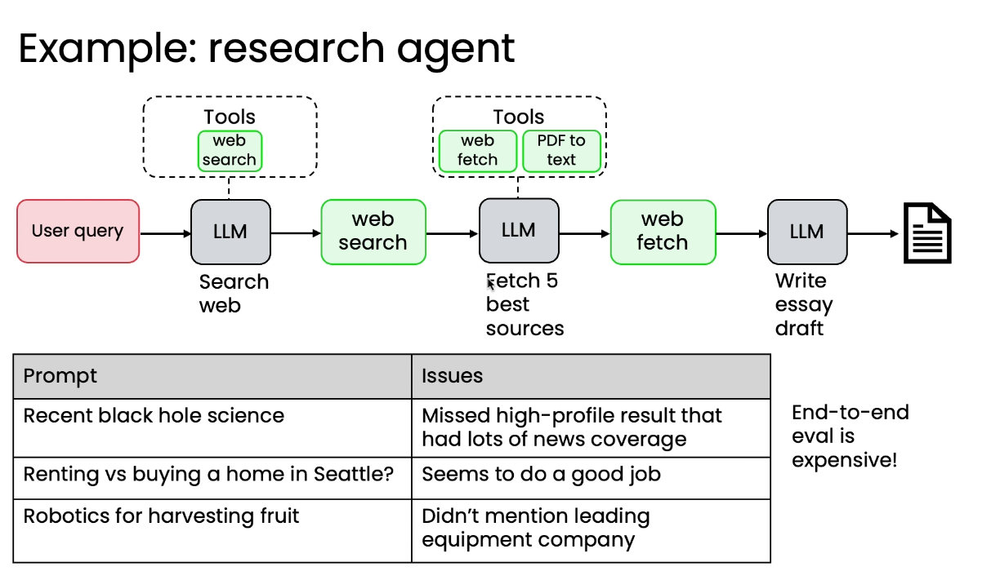
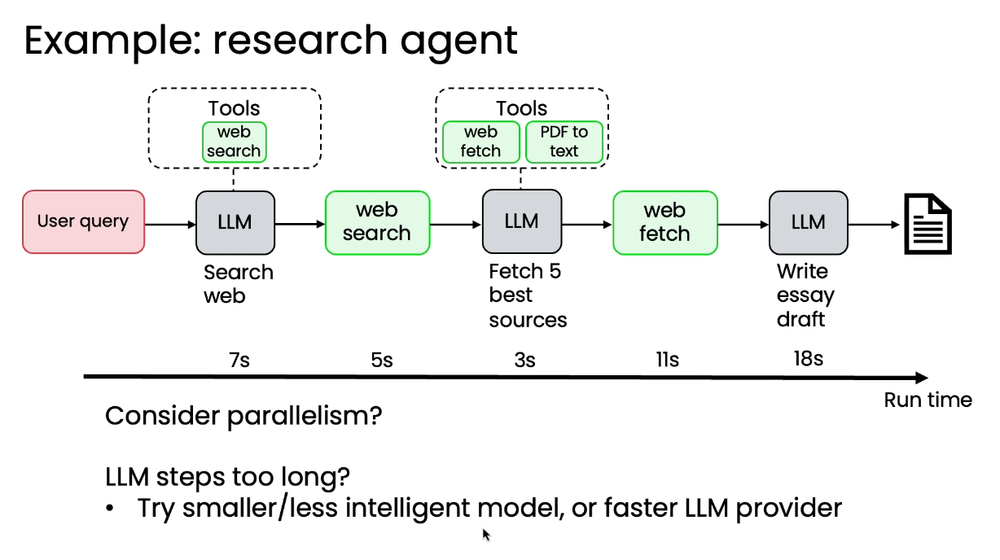

Prototype first, then turn observed failures into evals
The lessons recommend a fast, rough end-to-end prototype. Manually inspect roughly 10–20 outputs, find a recurring problem that matters, and build a small test set that measures it. The eval can grow as the system matures.
Invoice due date
Record the correct date for each invoice, standardize the output format, and compare extraction with ground truth.
Caption length
Count words in every output and test one shared rule: no more than ten words.
Research coverage
Ask a model judge how many expert-provided discussion points appear in each report.
Rubric score
Use one set of subjective criteria across examples when no per-example answer exists.
These examples form the lesson’s two dimensions: objective code check versus subjective model judgment, and per-example ground truth versus one shared rule.
Method →
The development loop follows evidence
- 01PrototypeBuild a complete workflow
- 02InspectRead outputs and traces
- 03EvaluateMeasure an important weakness
- 04AnalyzeLocate the responsible component
- 05ImproveChange that component
- 06RerunConfirm the metric moves
If the system improves but the score does not, the eval itself may need revision.
Error analysis turns traces into priorities
A trace contains the workflow’s intermediate outputs; an individual step is often called a span. Read the traces for cases with poor final results, judge which steps fall short of what a capable person would produce from the same input, and count the frequency of each failure source.
- FilterStudy the failed cases. Correct cases contribute less information about what to fix next.
- TraceInspect each step. In a research workflow, check query generation, returned pages, and source selection separately.
- LabelName the component at fault. An invoice error may begin in PDF-to-text or in the LLM extraction step.
- CountQuantify failure frequency. Work first on the component responsible for the largest share of important errors.
| Example | Span / component | Observed error | Attributed cause |
|---|---|---|---|
| Research prompt | Search results | Too many blog posts | Low-quality retrieval |
| Invoice | PDF-to-text | Date text missing | Extraction error |
Prioritization interface
count_by_component(ledger) -> priority_distributionThe distribution turns reviewed traces into a ranked engineering queue.
The next priority comes from the error distribution, not from the component that is easiest to edit.
Component-level evals produce a clearer, cheaper signal
Rerunning an entire search–draft–reflection workflow after a small search change is expensive and noisy. Later stochastic steps can hide a modest improvement in the component being tuned.

{kind=link}
The Module 4 lab makes the research step independently testable with find_references. It extracts returned URLs, checks them against a preferred-domain list, computes the preferred-source ratio, and returns a pass/fail result plus a Markdown summary.
Focused evaluation interfaces
date_eval(extracted, expected) -> boollength_eval(text, limit) -> boolcoverage_eval(report, gold_points) -> {score, explanation}preferred_source_ratio(urls, preferred_domains) -> metric
Different components require different interventions
Non-LLM component
Tune or replace it
Adjust search result count or date range, retrieval thresholds or chunk size, and model thresholds—or compare a different service.
LLM component
Change input or structure
Clarify the prompt, add examples, compare models with the eval, or split a difficult step into generation and reflection.
The lesson places fine-tuning last: consider it only after prompt changes, model comparison, and task decomposition have not delivered the needed improvement.
Benchmark latency and cost only after output quality works
The course orders the priorities deliberately: make the system useful first, then optimize latency, and focus on cost when scale makes it important.

{kind=link}
Analysis matures with the workflow
Rapid prototype
Build end to end; manually inspect outputs and traces.
Initial evaluation
Add a small end-to-end test set and a useful overall metric.
Rigorous error analysis
Count which components cause unsatisfactory results.
Efficient component tuning
Build focused evals for the steps that need repeated improvement.
Self-check
Why begin with 10–20 examples?
A small set is enough to establish a useful signal quickly; it can expand as the workflow and evaluation mature.
Why can a component eval be clearer than an end-to-end eval?
It isolates the changed step, avoids the cost of the full workflow, and reduces noise introduced by later components.
When should latency and cost become the main optimization target?
After output quality meets the application’s needs; cost becomes a priority when usage makes it materially important.
Course evidence + image attribution
Original English summary based on lessons 4.1–4.8 and the component-evaluation lab in the Datawhale China Module 4 reference. Contributor commentary identified in the source was excluded. The two selected lesson images are reproduced from pinned commit a93ab1d with source links in their captions. The repository contains an Apache-2.0 LICENSE while its README names CC BY-NC-SA 4.0; attribution is preserved and this site does not claim image ownership.